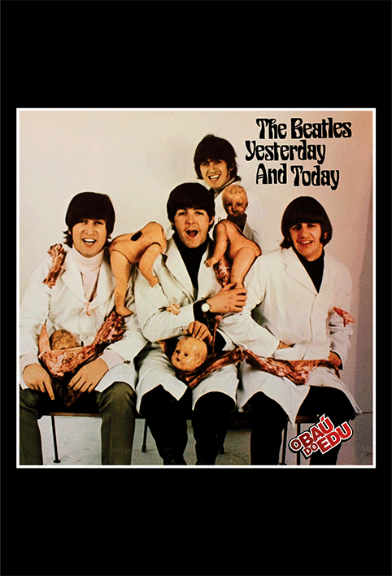
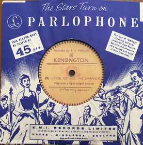

Qual é o disco de música pop mais raro e valioso do mundo?
Só pode ser um compacto de 78RPM, de 1958 do grupo quarrymen, embrião dos Beathes - formado por John Lennon, Poul MCcartney e George Harrison, mas sem ringo starr. No lado A, o disco traz uma versão de "That`ll be the day", classico de Buddy Holly, um dos maiores nomes do rock`n roll dos anos 50.
No lado B, encontra-se "In spete of all the danger", raríssima parceria gravada entre MCcartney e Harrison. Existe só uma cópia desse compacto, pertecente ao proprio MCcartney, que o arrematou do dono anterior por uma quantia não divulgada especula-se que, no mínimo 1 milhão de dólares. O lado A havia sido lançado em alguns discos piratas, mas o B permaneceu inédito até 1995, quando saiu a coletânia Anthology,primeiro lançamento oficial de ambas as faixas.
